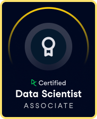
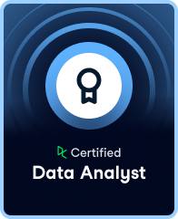

AI Agents
Designing AI-powered assistants that read, reason, respond, and automate high-value workflows.
AI Engineer and Data Scientist with 5+ years of experience building AI agents, predictive models, automation workflows, and practical training systems for real-world use.
Designing AI-powered assistants that read, reason, respond, and automate high-value workflows.
Connecting tools, APIs, CRMs, email, and messaging platforms into scalable automation systems.
Building predictive models, OCR systems, analytics dashboards, and practical AI solutions for clients and training.
Design and implementation of AI-powered assistants for email, research, support, and business workflows.
Automation systems using APIs, CRM tools, email flows, Zapier, Make, and n8n for operational efficiency.
Analytics pipelines, business reporting, dashboard development, and insight generation using Python and BI tools.
AI, Python, freelancing, and automation training for students, professionals, and institutions.
Currently focused on AI agents, workflow automation, technical training, and client-ready machine learning systems.
Building practical assistants for email, support, research, and workflow orchestration.
Connecting APIs, CRMs, forms, dashboards, and messaging tools into production-ready delivery flows.
Teaching AI, Python, freelancing, and applied automation through hands-on learning and mentoring.
Developing dashboards, OCR tools, predictive models, and computer vision projects for real use.
I focus on usable systems, not just ideas, with attention to delivery, utility, and business value.
I combine technical execution with training ability, which helps clients and learners understand what gets built.
I have delivered work and collaboration across Afghanistan, the USA, Dubai, and international online platforms.
I adapt quickly to changing client needs, new tools, and cross-functional delivery environments.
I work across AI engineering, data science, and automation training. My background combines software engineering, machine learning, backend systems, analytics, and freelancing mentorship. I have delivered training for UNDP, managed business systems, taught university students, and built practical tools including AI email agents, OCR document extractors, analytics dashboards, and CRM automation workflows.
AI agents, predictive models, analytics pipelines, workflow automation, and client delivery systems.
Human and Machine explores AI evolution, ethics, and human-machine collaboration.
Pashto (Native), Dari (Fluent), English (Fluent), Urdu (Fluent).
A research-oriented publication exploring AI evolution, human capability, ethical questions, and future collaboration between people and intelligent systems.
Focus areas include AI in society, education, healthcare, business transformation, ethics, and practical human-machine collaboration.
Co-authored by Noorullah Zamindar and Abdul Basir Mohmmad with a strong practical and research-led perspective.
Continued interest in unpublished research around machine learning, AI applications, and field-ready automation solutions.
Pashto (Native), Dari (Fluent), English (Fluent), and Urdu (Fluent) for multilingual communication and delivery.
Project and training experience across Afghanistan, the USA, Dubai, India, and remote online platforms.
Comfortable with distributed client communication, documentation, portfolio delivery, and async technical collaboration.
Professional work across AI training, analytics systems, workflow automation, teaching, and client delivery. Each role combines technical execution with practical business impact.
Academic training in software engineering, business administration, language development, and practical technical communication.
Used for data cleaning, analysis, visualization, database work, and business reporting across client and training projects.
Used to build predictive models, computer vision systems, OCR pipelines, and AI agents for real client work, educational demos, and automation-based solutions.
Designed automation systems that connect forms, CRMs, email, APIs, and messaging platforms into reliable workflows for operations, customer support, and service delivery.
Used across Flask backends, desktop applications, notebook-based experiments, frontend pages, and collaborative development workflows for both freelance and training projects.
Focused on making complex technical topics practical and understandable while delivering projects on time and helping trainees and clients move from ideas to usable systems.
Selected AI, automation, analytics, and product-focused work. Each project now has its own dedicated page for a cleaner and more professional presentation.
Delivered AI, freelancing, automation, and project-guidance support for more than 100 learners.
Completed more than 85 online classes and project-based sessions with strong learner feedback.
Delivered a 40+ day SQLite and PyQt6 POS desktop build for a USA-based client.
Completed multiple practical teaching and freelancing-focused client projects through Fiverr.
Designed to monitor inbox activity, classify requests, generate contextual responses, and speed up communication workflows for client-facing operations.
Built to reduce repetitive support handling by combining automation logic, client communication flows, and service response structure.
Built to convert image-based text into usable digital content for data processing, automation, and practical OCR tasks.
Developed as an image classification project using CNN-based training and evaluation for real-world sign recognition tasks.
Created to support employee attrition analysis with predictive modeling, web presentation, and practical HR-focused insight delivery.
Built as a practical machine learning web application that demonstrates feature-based prediction and accessible model presentation.
Developed to demonstrate applied machine learning in agriculture with accessible web delivery and disease-oriented prediction logic.
Developed as a computer vision project to identify vehicles and count movement events from video footage using classical detection methods.
Built to experiment with face alignment, swapping logic, and image processing through practical computer vision techniques.
Public repository evidence showing applied work across AI agents, OCR, computer vision, machine learning web apps, and data science experiments.
GitHub profile contains public repositories covering ML apps, automation systems, study projects, and portfolio delivery.
Repository mix includes prediction apps, OCR tools, support automation, and computer vision implementations.
Public GitHub is used as a visible proof layer for project delivery, experimentation, and portfolio maintenance.
Public GitHub Pages portfolio showing current branding, projects, services, and contact details.
Open Live SiteEmail automation agent for response drafting and workflow support.
Open RepositoryOCR-focused project for extracting usable text from image-based content.
Open RepositoryDeep learning classification project based on image data and CNN techniques.
Open RepositoryApplied machine learning web app for disease prediction and AI demonstration.
Open RepositoryProfessional certifications across AI, cybersecurity, analytics, research, and freelancing-focused capacity building. Direct badge evidence is attached where available; issuer references are used for the remaining certificates.

UNDP & HBC Company, Afghanistan
Year not listed View Badge
UNDP, Turkey
Year not listed View BadgePlatform-based trust signals and delivery proof from training, freelancing, and client-facing work.
Maintained a top-rated teaching profile with strong learner satisfaction and consistent delivery.
Completed more than 85 classes and project-based learning sessions through online teaching platforms.
Delivered a long-duration SQLite and PyQt6 POS desktop system for a USA-based client.
Completed multiple Fiverr teaching and guidance projects focused on practical technical learning.
Worked remotely with clients and partners in the USA and Dubai on AI and data-driven systems.
Mentored and trained learners in AI, freelancing, automation, and applied project development.
Top-rated teaching profile with a 4.9 / 5.0 rating and more than 85 completed classes.
Multiple completed teaching and guidance projects with practical technical learning outcomes.
Capacity-building work in AI, ML, and data science delivery for under-resourced communities.
AI and machine learning training, data science capacity building, and automation-focused learning delivery.
Backend systems, forecasting workflows, reporting pipelines, and dashboard-oriented data operations.
Lecture delivery and hands-on technical training in AI, Python, IT, and web development.
Freelance teaching, practical client support, and rating-backed online delivery across multiple projects and classes.
Client acquisition, proof of work, portfolio visibility, and professional networking for remote opportunities.
Public project evidence across AI agents, OCR, ML web apps, computer vision, and deployment-ready code.
Available for AI engineering, automation consulting, machine learning training, remote projects, and freelance collaboration.
If you need AI agents, workflow automation, dashboards, training programs, or machine learning support, contact me directly.
Ahmad Shah Baba Mina, Saeed Jamaludin Town